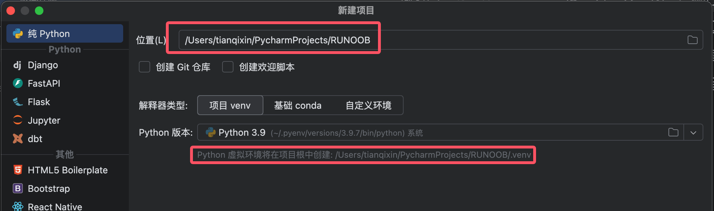

PyCharm Run and Debug
PyCharm provides powerful running and debugging tools to help developers efficiently execute and troubleshoot Python code issues. This section will detail environment configuration, script running, and debugging techniques.Configure the Runtime Environment
Set the Python Interpreter
Open the Interpreter Settings:Settings → Project → Python Interpreter (Windows/Linux: Ctrl+Alt+S, Mac: ⌘,).
Select the Interpreter:
Virtual Environment(Recommended):
Virtualenv/Conda/PipenvSystem Interpreter: Directly use the installed Python
Remote Interpreter: Connect to a server or Docker environment

Install Dependency Packages:
In the interpreter interface, click
+Search and install packages (e.g.,requests）Or run through the terminal
pip install package_name

Configure Run Parameters
Open the Run Configuration:
Top toolbar →
Run → Edit Configurations（Run → Edit Configurations）Or click the configuration dropdown next to the Run button

Add a Python Configuration:Click + → Select Python

Key Parameters:
Script Path: Select the
.pyfile to executeParameters: Enter command-line parameters (e.g.,
--port 8000）Working Directory: Set the current directory when the script runs
Environment Variables: Add custom environment variables (e.g.,
PYTHONPATH）

Save the Configuration:Click Apply → OK.
Run Python Scripts
Run a Single File
Method 1: Right-click Run：
-
Right-click in the editor →
Run 'filename'（Run 'filename'）
Method 2: Toolbar Run：
-
Click the green Run button ▶️ in the top toolbar
Method 3: Shortcut Run：
-
Shift + F10(Run the current file) -
Ctrl + Shift + F10(Run the currently edited file)

Run Modules (e.g., Flask/Django)
Configure Module Running:In the Run Configuration, select the module name instead of the script path.
For example:
Module name：
flaskParameters：
run --port=5000
Run a Module with Parameters:
# 例如运行 Django 开发服务器 python manage.py runserver 0.0.0.0:8000
In the "Parameters" field of the Run Configuration, enter: runserver 0.0.0.0:8000

Debug Code
Set Breakpoints
Add a Breakpoint：
-
Click to the left of the line number (a red dot appears)
-
Right-click a breakpoint to set conditions (e.g.,
x > 10）
Breakpoint Types：
-
Line Breakpoint: Pause at the specified line
-
Exception Breakpoint: Pause when an exception is thrown (
运行 → 查看断点 → 添加 Python 异常断点）
Start Debugging：
-
Click the toolbar's
🐞 Debugbutton -
or the shortcut key
Shift + F9

Variable Monitoring (Watches)
View Variables：
-
After debugging starts, in the
变量（Variables）panel, view the variable values of the current scope -
Double-click a variable to edit its value (for temporary testing)
Add Watch：
-
In
监视（Watches）In the panel, click+ -
Enter a variable name or expression (e.g.,
len(items)）
Debug Control Operations
| Operation | Shortcut (Win/Linux) | Shortcut (Mac) | Description |
|---|---|---|---|
| Step Over | F8 | F8 | Execute the current line without entering the function |
| Step Into | F7 | F7 | Enter the function to debug |
| Step Out | Shift + F8 | ⇧ + F8 | Finish executing the current function and return to the call site |
| Resume | F9 | ⌘ + F8 | Continue running until the next breakpoint |
| Stop | Ctrl + F2 | ⌘ + F2 | Terminate the debugging session |
Debug Console
Interactive Debugging：
-
During debugging, you can
Debug Consoledirectly execute Python code -
For example: temporarily call functions or modify variables
Evaluate Expression：
-
Select code → Right-click →
评估表达式（Evaluate Expression） -
or the shortcut key
Alt + F8
Advanced Debugging Tips
Remote Debugging
Configure a Remote Interpreter：
-
文件 → 设置 → Python 解释器 → 添加远程解释器 -
Supports SSH, Docker, and Vagrant
Debug Remote Code：
-
Breakpoints and debugging operations are the same as local debugging
Multi-Process Debugging
Child Process Debugging：
-
In the Run Configuration, check
在子进程中调试（Debug child processes） -
Applicable to
multiprocessingorsubprocessscenarios
Attach to Process：
-
运行 → 附加到本地进程（Attach to Local Process） -
Select a running Python process
Troubleshooting Common Problems
Q1: Breakpoints not taking effect?
-
Check whether the interpreter matches the project environment
-
Ensure the code has been saved (
Ctrl + S） -
Check whether the breakpoint is disabled (the breakpoint icon is gray)
Q2: How to debug unit tests?
-
Right-click in the test file →
Debug 'test name' -
Or use
pytest/unittesta dedicated run configuration
Q3: Variables display "Unknown" during debugging?
-
Optimize the code structure to avoid overly complex expressions
-
Use
Watchesto manually add watch variables
Debug Shortcuts
| Scenario | Operation |
|---|---|
| Quickly run the current file | Shift + F10 |
| Start debugging | Shift + F9 |
| Conditional breakpoint | Right-click the breakpoint → Set condition |
| View variable values | When debugging, in theVariablespanel, view |
| Temporarily execute code | Enter commands in the Debug Console |
| Multi-Process Debugging | Check in the Run ConfigurationDebug child processes |